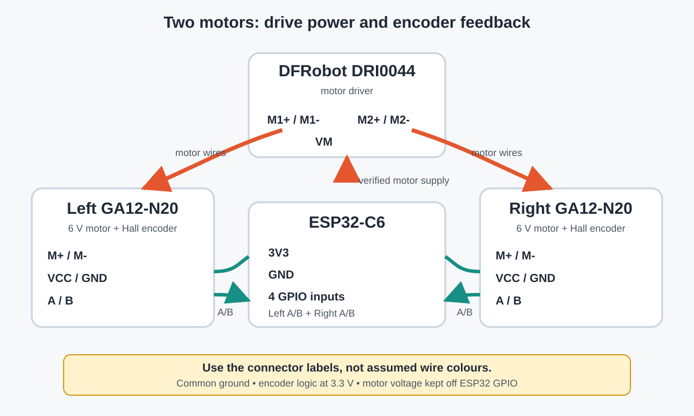

Resource Hub / Hardware / H6
H6 · Motors and encoders2x GA12-N20 Micro Gear Motors
One 6 V gearmotor per wheel, about 500 rpm no-load. The Hall encoder's A and B signals measure wheel movement and direction.
01 Wiring

| M+, M- | One DRI0044 motor output pair |
|---|---|
| Encoder VCC | 3V3, only if the encoder supports it |
| Encoder GND | Common ground |
| Encoder A, B | Two ESP32 GPIO inputs per motor |
Wire colours and connector order vary, so check the label or seller pinout for your exact motor.
Two voltage traps. A full 2S battery is 8.4 V, above the motor's 6 V rating, so use a suitable motor supply or an approved limit. And an encoder signal above 3.6 V must never reach a GPIO, so power it from 3.3 V or level-shift.
02 What A and B tell you
- Pulse count is distance travelled.
- Pulse frequency is wheel speed.
- Which channel leads is direction.
Do not assume a ticks-per-revolution figure. Gear ratio, encoder version and counting one, two or four edges all change it. Measure it.
03 Test and calibrate
- Wheels off the table, motor power off, encoder powered from the verified logic voltage.
- Turn one wheel by hand and confirm both channels count.
- Run that motor slowly through the DRI0044 and check the count direction.
- Repeat for the other wheel and record the measured ticks per wheel revolution.
distance per tick = (pi x wheel diameter) / measured ticks per revolutionIf one wheel counts the wrong way, flip its sign in software. This gives you the 180 mm cell distance you need in S5.